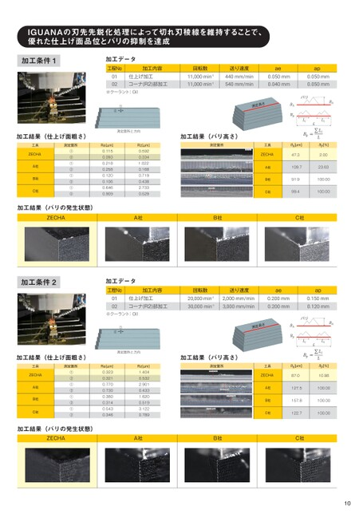

IGUANAの刃先先鋭化処理によって切れ刃稜線を維持することで、優れた仕上げ面品位とバリの抑制を達成加工条件1加工データ工程No加工内容回転数送り速度aeap0102仕上げ加工コーナ(R2)部加工※クーラント:Oil①②測定箇所と方向加工結果(仕上げ面粗さ)工具ZECHAA社B社C社測定箇所①②①②①②①②Ra[µm]0.1150.0930.2180.2580.1200.1060.6460.909Rz[µm]0.5920.3341.0220.1680.7190.4382.7330.529加工結果(バリの発生状態)440mm/min0.050mm11,000min-111,000min-1540mm/min0.040mm0.050mm0.050mmバリ測定長さ𝐵ℎ𝐵𝑝𝐿𝑖𝐵𝑝𝐿𝑖L=∑𝐿𝑖𝐿𝐵p[%]2.00𝐵ℎ[µm]47.3109.723.6391.999.4100.00100.00加工結果(バリ高さ)測定箇所工具ZECHAA社B社C社𝐵ℎ𝐵ℎZECHAA社B社C社加工条件2加工データ工程No加工内容回転数送り速度aeap0102仕上げ加工コーナ(R2)部加工※クーラント:Oil①②測定箇所と方向加工結果(仕上げ面粗さ)工具ZECHAA社B社C社測定箇所①②①②①②①②Ra[µm]0.3230.3210.7700.7300.3800.3140.5430.346Rz[µm]1.4040.5322.9010.4331.6200.5193.1220.789加工結果(バリの発生状態)20,000min-12,000mm/min0.200mm30,000min-13,000mm/min0.200mm0.150mm0.120mmバリ測定長さ𝐵ℎ𝐵𝑝𝐿𝑖𝐵𝑝𝐿𝑖L=∑𝐿𝑖𝐿𝐵p[%]10.98𝐵ℎ[µm]87.0127.5100.00157.8100.00122.7100.00加工結果(バリ高さ)測定箇所工具ZECHAA社B社C社ZECHAA社B社C社10
